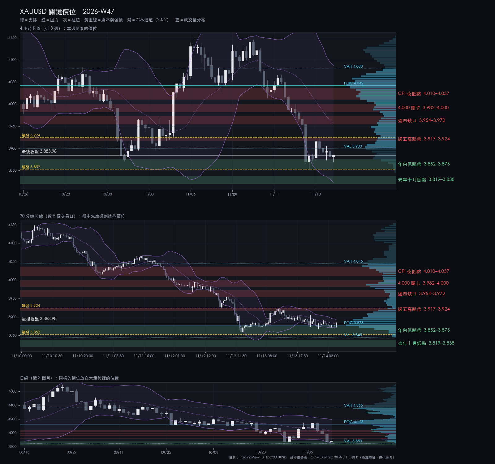
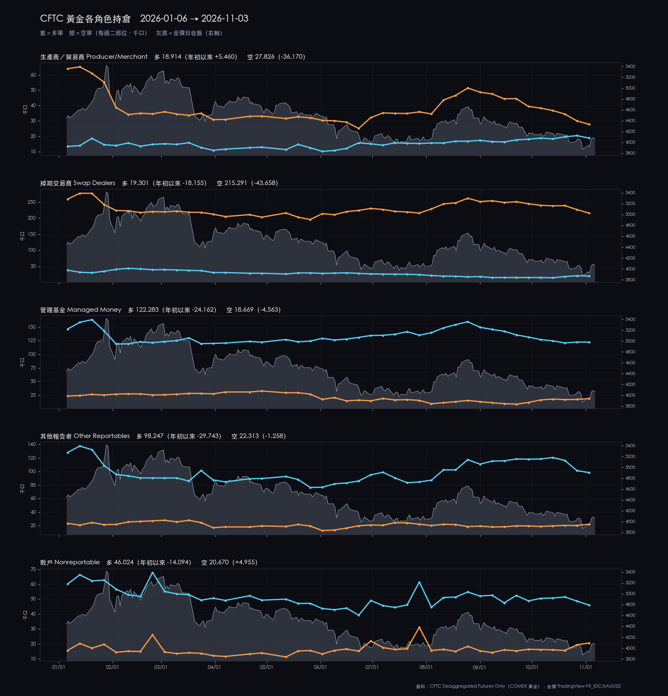
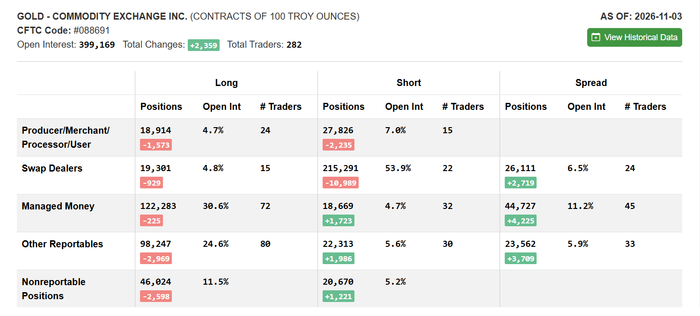

2026-W47 · Sun · 信心 medium 單一來源
XAUUSD 2026-W47 週報
CPI 高於預期、Fed 理事不排除 12 月升 2 碼；同週金價三天跌 6.4%，盤中 3852 創 13 個月低；週收 3884，日收未破 3875。
本週建議 觀望：等 3852–3875 的 4h 收盤表態，不預先進場
資料截止：2026-11-13T21:30:00+00:00
關鍵價位

| 4,010.34–4,036.84 | 阻力 | CPI 夜低點 | 上週支撐已跌破；回到這裡視為壓力 |
|---|---|---|---|
| 3,981.90–4,000.48 | 阻力 | 4,000 關卡 | 反彈第二目標；4h EMA50 在帶內 |
| 3,953.91–3,972.39 | 阻力 | 週四缺口 | 反彈第一目標；到這裡看 4h 反應 |
| 3,916.81–3,924.30 | 阻力 | 週五高點帶 | 到這裡不追多；4h 收上 3924.30 才算反彈成立 |
| 3,852.35–3,875.19 | 支撐 | 年內低點帶 | 4h 收在帶內或之上先觀望；4h 收破 3852.35 看下一帶 |
| 3,819.32–3,838.22 | 支撐 | 去年十月低點 | 破 3852.35 後的第一目標；到這裡不追空 |
劇本
| 整理 | 40% | 在 3852–3924 之間整理，等零售銷售與 FOMC 會議紀要 | — |
|---|---|---|---|
| 偏空 | 35% | 4h 收破 3852，看 3819–3838（去年十月低點） | 3,852.35 |
| 偏多 | 25% | 4h 收上 3924，看 3954–3972，再看 3982–4000 | 3,924.30 |
本週看什麼
- 3852–3875 年內低點帶：4h 收盤守不守得住
- 3917–3924 週五高點帶：4h 能否收上
- 週二 21:30 零售銷售；週四 03:00 FOMC 會議紀要
S1／S2
| S1 V3.9 | wait | B 級：逆勢突破；TP1 約 3918，就在週五高點帶下緣 |
|---|---|---|
| S2 V3.2 | wait | B 級：3852–3875 等訊號；停損落在週四低點下方 2–7 點 |
事件
| 2026-11-16 18:00 | Fed 理事 Barr 演說（AI 與金融穩定，米蘭） | Fed 官方行事曆（美東 5:00 a.m.）。主題為金融穩定（判斷：對利率預期影響小）。 |
|---|---|---|
| 2026-11-17 01:00 | Fed 主席 Warsh 開場致詞（舊金山聯儲生產力與就業會議） | Fed 官方行事曆（美東 11/16 12:00）。前後 30 分鐘不新進場（執行者建議）。 |
| 2026-11-17 04:30 | CFTC 持倉報告延後公布（2026-11-10 那期） | CFTC 發布時程：聯邦假日延後。資料時點變動，不是價格事件（判斷）。 |
| 2026-11-17 21:30 | 美國 10 月零售銷售（Advance Monthly Retail Sales） | Census 排程。前後 30 分鐘不新進場，持倉先評估（執行者建議）。 |
| 2026-11-17 22:10 | Fed 理事 Waller 演說（支付） | Fed 官方行事曆。主題為支付；問答若觸及利率仍可能有反應（判斷）。 |
| 2026-11-18 05:20 | Nvidia 第三季財報與電話會議（執行長辭職後第一次） | SEC 8-K 新聞稿（美西 11/17 約 13:20）。股市事件，本週風險情緒的主要變數（判斷）。 |
| 2026-11-18 21:30 | 美國 10 月新屋開工（New Residential Construction） | Census 排程。次級數據，對金價影響通常有限（判斷）。 |
| 2026-11-19 02:35 | Fed 理事 Barr 演說（社區發展投資） | Fed 官方行事曆；在會議紀要前 25 分鐘。 |
| 2026-11-19 03:00 | FOMC 會議紀要（10 月 27–28 日會議） | Fed 官方行事曆（美東 11/18 14:00）。前後 30 分鐘不新進場，持倉先評估（執行者建議）。本週沒有 FOMC 會議，下一次是 12/8–9。 |
| 2026-11-19 22:25 | Fed 副主席 Jefferson 座談（經濟衝擊） | Fed 官方行事曆（座談）。 |
| 2026-11-20 03:15 | Fed 理事 Barr 座談（AI） | Fed 官方行事曆（座談）。 |
| 2026-11-20 07:30 | 費城聯儲活動：Money Marketeers 演說（講者未列名） | 費城聯儲活動頁（美東 11/19 18:30），未列講者。其他有投票權的地區聯儲未列本週主席談話。 |
| 2026-11-20 21:25 | Fed 理事 Waller 歡迎致詞 | Fed 官方行事曆。 |
| 2026-11-21 01:15 | Fed 理事 Cook 演說（全球脈絡下的美國經濟，聖地牙哥） | Fed 官方行事曆；在週末全平之前不到 3 小時。 |
| 2026-11-21 04:00 | 週末全平（POLICY 規則 4） | 週六 04:00 前全部平倉，不留倉過週末（交易規則 4）。 |
| 2026-11-21 04:30 | CFTC 持倉報告（2026-11-17 那期，照常公布） | CFTC 發布時程，照常公布；在週末全平之後。再下一期（11/24）延到 11/30。 |
上週回顧
- 週一 07:00 4h 收上 4118 觸發反彈劇本，15:00 收破 4105 即失效；週二凌晨仍見 4148.60
- 週二 CPI 月增 0.4% 高於預期、Waller 提升 2 碼的可能，金價日跌 2.6%
- 週三 4h 收破 4026，下跌劇本觸發；週四低 3852，兩個目標都到
| 2026-W43 | 4,163.6 | 4,190.38 | 3,975.792 | 3,995.38 | -4.04% |
|---|---|---|---|---|---|
| 2026-W44 | 3,992.6 | 4,083.41 | 3,870.255 | 3,875.19 | -2.94% |
| 2026-W45 | 3,874.3 | 4,146.99 | 3,874.3 | 4,069.99 | +5.05% |
| 2026-W46 | 4,069.99 | 4,148.6 | 3,852.62 | 3,883.89 | -4.57% |
市場消息
情緒 偏風險：美股、台股上漲、VIX 回落；升息預期推高美元與殖利率
- CPI 月增 0.4% 高於預期，Waller 提 12 月升 2 碼的可能；金價一週跌約 4.6%
- Nvidia 執行長黃仁勳辭職、股價一週約 −12%；美股仍週漲約 2.5%
- 台股一週漲 10% 收 43,675；外資賣超由 5,244 億縮到 968 億元
展開看消息整理：上週 7 則、一週變化、近 3 個月、近半年主線
上週消息（2026-11-07～2026-11-13）
| 11-10 | Fed／總經 | 10 月 CPI 月增 0.4%（預期 0.3%）、核心 0.3%（預期 0.2%）；BLS 未公布年增率。 | 10 年期殖利率單日升逾 14bp；12 月期金跌 84.3 美元（−2.05%）收 4,030.2 | BLS、Investrade |
|---|---|---|---|---|
| 11-10 | Fed／總經 | Waller：傾向 12 月升 1 碼，核心 CPI 約 0.3% 或更高應考慮 2 碼；Logan：至少再升 2 次。 | 核心 CPI 正好 0.3%；到 11/13 市場看 12 月升 2 碼的機率 12%、升 1 碼 88% | Federal Reserve、Dallas Fed、Investrade |
| 11-12 | 美股／AI | Nvidia 宣布執行長黃仁勳辭職並退出董事會，即日生效；財務長 Kress 暫代，11/17 公布財報。 | Nvidia 週五盤中跌逾 4%、一週約 −12%，市值收在 4 兆美元以下 | SEC（Nvidia 8-K 新聞稿）、Yahoo Finance |
| 11-12 | 黃金 | 金價週二到週四連跌三天、創 52 週新低；報導歸因 CPI 後美元反彈與美債殖利率急升。 | 12 月期金週五收 3,886.3（+1.0），一週跌約 4%；美元指數 103.38，2025 年 4 月以來最高 | Investrade、Investrade |
| 11-13 | Fed／總經 | 10 月 PPI 月增 0.3%（預期 0.4%）；年增 6.5%（預期 6.6%），2022 年 11 月來最大。 | 2 年期殖利率 4.872%、一週 +35.2bp；10 年期 5.152%、一週 +29.4bp | BLS、Investrade、Yahoo Finance |
| 11-13 | 美股／AI | 美股一週收高：S&P 500 +2.51%、Nasdaq +2.27%、道瓊 +2.07%。 | 週五 S&P 500 −0.40% 收 7,562、Nasdaq −0.91% 收 25,136 | Investrade |
| 11-13 | 台股／台幣 | 台股一週漲 3,973 點（+10.01%）收 43,675.12；外資週賣超縮到 967.87 億元。 | 前一週外資賣超 5,243.76 億元；本週投信買超 1,118.95 億元、三大法人合計賣超 270.38 億元 | 臺灣證券交易所（市場成交資訊）、臺灣證券交易所（三大法人週報 11/09–11/13）、臺灣證券交易所（三大法人週報 11/02–11/06） |
一週變化
| 黃金（COMEX 期貨） | 3,886.30 | -4.63% | 11-13 |
|---|---|---|---|
| S&P 500 | 7,561.67 | +2.51% | 11-13 |
| Nasdaq | 25,136.27 | +2.27% | 11-13 |
| 加權指數 | 43,675.12 | +10.01% | 11-13 |
| Brent 原油 | 95.84 | -2.52% | 11-13 |
| 美 10 年期殖利率 | 5.15 | +30 bp | 11-13 |
| 美元指數 | 103.41 | +1.09% | 11-13 |
| 美元／台幣 | 32.94 | -0.51% | 11-13 |
| VIX | 19.30 | -24.73% | 11-13 |
資料：Yahoo Finance 日收盤（yfinance）
近 3 個月
| 10-29 | 美股／AI | Alphabet 財報不如預期、自由現金流轉負，股價跌約 12%；微軟雲端成長獲買盤。 |
|---|---|---|
| 10-30 | 黃金 | 金價跌破 3,900，2026 年新低，距 1 月高點約 −30%；白銀同日跌約 6%。 |
| 10-30 | 台股／台幣 | 台股跌破半年線；外資 10 月賣超近 9,943 億元，單月紀錄。 |
| 11-04 | Fed／總經 | 期中選舉民主黨拿下參眾兩院；川普表示接受結果，市場預期國會分治、舉債放緩。 |
| 11-04 | 地緣／油價 | 市場押注選後較快達成美伊協議，油價戰爭溢價快速消退；協議本身尚未證實。 |
| 11-05 | 美股／AI | AI 與晶片股重挫，市場擔心民主黨國會收緊 AI 規範、放慢資料中心審批。 |
| 11-06 | Fed／總經 | 10 月非農就業增加 16.5 萬，遠高於預期約 6.5 萬；失業率降到 4.1%，12 月升息預期升溫。 |
| 11-06 | 台股／台幣 | 台股跟著 AI 股連日重挫，外資連續賣超；11/6 盤中一度跌逾 3,700 點，史上最大盤中跌點。 |
近半年主線
| 伊朗衝突與油價 | 2026-02-28 | Brent 週收約 95.8、一週跌約 2.5%，連兩週收在 100 美元之下。 |
|---|---|---|
| Fed 重回升息與高殖利率 | 2026-06-17 | 10 月 CPI 月增 0.4% 高於預期，Waller 提 12 月升 2 碼的可能；2 年期殖利率一週 +35bp。 |
| AI 支出與回收疑慮 | 2026-06-05 | 美股反彈、Nasdaq 週漲 2.3%；Nvidia 執行長黃仁勳辭職，股價一週約 −12%，11/17 財報。 |
| 黃金從 1 月高點回落 | 2026-01-29 | CPI 後連跌三天、創 52 週新低，週收約 3,884、一週跌約 4.6%，距 1 月高點約 −31%。 |
| 外資賣台股、台幣走貶 | 2026-10-06 | 台股一週漲 10%、收 43,675；外資賣超縮到約 968 億元，台幣週收約 32.94。 |
消息只是背景，不是進出場依據；「未確認」表示只找到評論或二手來源。
CFTC
本週沒有新資料：11/10 那期因聯邦假日延到台北 11/17（二）04:30 公布。沿用 11/3：大戶淨多 10.4 萬，在本週下跌之前。
持倉反映的是建立它的那一週，不能預測下一週；看研究結論 →

CFTC 原始截圖（2026-11-03）

展開看策略績效：S1／S2 回測（資料到 2026-10-09）
| S1 V3.9 | 346 | 53.47% | +61.04% | 1.75 | 4.67% | 3.05 | +22.46%（黃金 -2.87%） |
|---|---|---|---|---|---|---|---|
| S2 V3.2 | 130 | 41.54% | +51.54% | 1.67 | 12.79% | 1.79 | +1.21%（黃金 -2.87%） |
| S1 V3.9 | +0.0% | -0.1% | -1.57% |
|---|---|---|---|
| S2 V3.2 | +2.0% | -5.0% | -1.0% |
| 黃金 | +10.06% | -6.45% | +0.8% |
TradingView 回測匯出（固定部位、不複利）；只在重新匯出時更新，不是訊號。 距上次匯出 36 天。完整績效頁 →
展開看細節：價位依據、劇本完整條件、市場摘要、證據限制
市場摘要
W46 收 3883.89，週開 4069.99，開收 −4.57%，收在週區間由下往上 10.6% 處；振幅 295.98 點，是 2026-08-17 那週以來最大。週一高 4148.60（台北週二凌晨）、日收 4140.06；週二 10 月 CPI 月增 0.4%（預期 0.3%），Fed 理事 Waller 同日表示傾向 12 月升 1 碼、不排除 2 碼，金價日跌 2.61%；週三收破 4,000；週四盤中 3852.62，是 2025-10-03 以來最低，週一日收到週四日收三天跌 6.37%；週四、週五日收 3876.46、3883.89 仍在 10/30 日收 3875.19 之上。價格低於 4h EMA50 3992.83、1d EMA50 4122.46；日收在 1d 布林下軌 3855.28 上方 28.61 點。DXY 週收 103.410（+1.11%），是 2025-03-24 那週以來最高。
價位依據
| 年內低點帶 | 3852.35–3875.19 | 實際成交價：週四 11/12 23:00 那根 4h 低 3852.35（本週與 2026 年盤中最低；日線／週線匯出記 3852.62）；週五 11/13 23:00 那根 4h 低 3867.30（週五最低；日線匯出記 3867.761）；10/30 日線低 3870.255、日收 3875.19（2026 年最低日收）。 帶寬 22.84 點，約 0.70 根 4h ATR（32.77，最近 14 根 4h 真實區間的簡單平均）。週四日收 3876.46、週五日收 3883.89 都在 10/30 日收 3875.19 之上：盤中破了前低，日收沒破。計算值 1d 布林下軌 3855.28 在帶內。週收 3883.89 在帶上緣上方 8.70 點（以 ATR 衡量帶寬是執行者選定的描述方式，未經核准，下同）。 |
|---|---|---|
| 週五高點帶 | 3916.81–3924.30 | 實際成交價：週五 11/13 11:00 那根 4h 高 3923.135（週四急跌後的最高）、07:00 那根高 3916.81；週四 11/12 15:00 那根 4h 低 3924.30（急跌前最後一根的低點，也是 4h 向下缺口 3887.589–3924.30 的上緣）。 帶寬 7.49 點，約 0.23 根 4h ATR。週五 07:00、11:00 兩根 4h 進到帶內但收在 3915.64、3900.50，沒能收上；急跌後最高的 4h 收盤 3915.64 在帶下緣之下 1.17 點。計算值 1h EMA50 3922.00、1h 布林上軌 3919.09 在帶內。 |
| 週四缺口 | 3953.91–3972.39 | 實際成交價：週四 11/12 15:00 那根 4h 高 3972.39、收 3953.91；4h 向下缺口 3955.606–3962.26（11/12 11:00 那根低 3962.26、19:00 那根高 3955.606）在帶內，逐根重算到最後一根 4h 仍未回補。 帶寬 18.48 點，約 0.56 根 4h ATR。計算值 4h 布林中軌 3954.93 在帶內下緣。（判斷）週四急跌的起跌區，反彈到這裡會先遇到未回補缺口。 |
| 4,000 關卡 | 3981.90–4000.48 | 實際成交價：11/12 03:00 那根 4h 低 3981.90；11/12 07:00 那根高 4000.48（週四最高，日線同）；11/11 23:00、11/12 03:00 兩根收 3987.23、3987.24；週三日收 3987.70。 帶寬 18.58 點，約 0.57 根 4h ATR。計算值 4h EMA50 3992.83 在帶內。4h 向下缺口 3990.99–4010.34 的下緣在帶內，已回補到 4000.48。週三收破 4,000 後，週四只回到 4000.48 就再跌。 |
| CPI 夜低點 | 4010.34–4036.84 | 實際成交價：11/10 23:00 那根 4h（CPI 當晚）低 4013.20、收 4027.14；11/11 03:00 那根高 4036.84、收 4032.03；11/11 19:00 那根低 4010.34、收 4015.30。 帶寬 26.50 點，約 0.81 根 4h ATR。計算值 1d 布林中軌 4023.91 在帶內。上週報告的支撐 4026.04–4036.95（非農低點，邊界是 11/6 的價位、本週未重算）落在這裡；週三 19:00 那根 4h 收 4015.30 收破它，之後沒有 4h 收回。（判斷）跌破後轉為壓力。 |
| 去年十月低點 | 3819.32–3838.22 | 實際成交價：2025-10-03 日線低 3838.22、2025-10-02 日線低 3819.32，是本週低點 3852.62 下方最近的兩個日線低點（再往下是 2025-09-30 低 3793.28）。邊界是 13 個月前的價位。 帶寬 18.90 點，約 0.58 根 4h ATR。計算值 4h 布林下軌 3822.94 在帶內；週布林下軌 3807.26 在帶下緣之下 12.06 點。本週日線低點 3852.62 是 2025-10-03 以來最低，所以下方最近的參考只能取自去年。 |
劇本完整條件
| 整理 | 40% | 價格在年內低點帶 3852.35–3875.19 與週五高點帶 3916.81–3924.30 之間往復，沒有 4h 收盤站上 3924.30，也沒有 4h 收盤跌破 3852.35。 | 4h 收盤站上 3924.30，或 4h 收盤跌破 3852.35。 | 區間內往復：上看 3916.81–3924.30 的反應，下看 3852.35–3875.19。 |
|---|---|---|---|---|
| 偏空 | 35% | 4h 收盤跌破 3852.35（週四低點、2026 年盤中最低）。 | 觸發後 4h 收盤站回 3875.19（年內低點帶上緣）之上。 | 第一目標 3819.32–3838.22（2025 年 10 月日線低點）；第二目標 3807.26（週布林下軌，計算值）。 |
| 偏多 | 25% | 4h 收盤站上 3924.30（週四急跌前最後一根 4h 的低點、向下缺口上緣）。 | 觸發後 4h 收盤跌回 3916.81（週五高點帶下緣）之下。 | 第一目標 3953.91–3972.39（未回補缺口與 4h 布林中軌）；第二目標 3981.90–4000.48（4h EMA50 與 4,000 關卡）。 |
轉折條件
4h 收盤站上 3924.30，或 4h 收盤跌破 3852.35——任一發生即脫離整理劇本，屆時以 live 結構重新評估。
S1／S2 完整條件
| S1 V3.9 | 條件式，且要求 live 正式 V3.9 訊號：等 30m 收盤站上 30m 布林上軌。目前上軌 3893.13，距最後收盤 3883.98 為 9.15 點。做多是逆勢（價格在 30m、1h、4h、1d 的 EMA50 與 EMA200 之下）；在 3893 附近成交，TP1 約 3918 落在週五高點帶下緣，TP2 約 3980.5 要穿過兩個壓力帶（判斷）。條件式預評等級 B（執行者把量表延伸用於尚無訊號時，未經核准）。零售銷售、FOMC 會議紀要前後 30 分鐘不新進場（執行者建議）。S1 正在預註冊前測，觸及停損門檻即暫停推薦。 | 固定停損：成交價下方 25 點；TP1 1R、TP2 3.5R。 | 固定口數與固定停損（細節見密碼頁）；同時只持一個部位。 |
|---|---|---|---|
| S2 V3.2 | 等待價格回到 3852.35–3875.19 年內低點帶並出現正式 V3.2 訊號；帶上緣在週收 3883.89 下方 8.70 點。這個帶在週四晚上、週五晚上各被測試一次，都收回（4h 低 3852.35、3867.30）。在 3870 附近成交，停損約 3845（週四低點下方 7.35 點）；若在帶上緣 3875 成交，停損 3850 只比週四低點低 2.35 點。做多是逆勢。條件式預評等級 B（執行者把量表延伸用於尚無訊號時，未經核准；在支撐區等訊號是執行者的用法）。 | 固定停損：成交價下方 25 點；TP1 2R、TP2 4R。 | 固定口數與固定停損（細節見密碼頁）；同時只持一個部位；S2 每週上限 2 次。 |
CFTC 完整數字
本週沒有新一期：2026-11-10 那期因美國聯邦假日延到美東 11/16（一）15:30＝台北 11/17（二）04:30 公布（CFTC 發布時程頁）。本報告沿用 2026-11-03（週二持倉）當期，與上週是同一期、同一張圖，在 11/4 選後反彈與本週 CPI 後下跌之前。可對照本圖核對：未平倉 399,169（+2,359）；Managed Money 多 122,283（−225）、空 18,669（+1,723）、價差 44,727（+4,225），淨多 103,614；Swap Dealers 空 215,291（−10,989）；散戶（Nonreportable）淨多 25,354（−3,819）。以上僅作描述，不作方向訊號。Commitments of Traders 由 cftc.gov 免費公布，屬美國公有領域資料；本圖只含部位統計，不含任何帳戶、持倉或身分資訊。
證據限制
- 本期僅一份合格報告（另一 producer 暫停中），為單一來源；方向判斷沒有交叉檢驗。
- 本報告的覆核由同一個模型在無建構記憶的情況下執行，不是獨立檢驗：範圍僅限可比對的契約遵循，不涵蓋判斷。覆核修正 24 項（8 項駁回）；價位、觸發價、機率與等級未變。
- CFTC 本週沒有新一期（11/10 那期延到台北 11/17 公布）；沿用的 11/03 那期到週五收盤已落後 10 天，看不到本週下跌期間的部位。CFTC 部位與各角色年初至今圖僅作背景描述，不作方向訊號。
- 市場消息摘要以自己的文字寫成，「未確認」表示只找到評論或二手來源；新聞不作為價位、機率或進場條件。
- 事件行事曆（Fed、Census、BLS、CFTC、SEC）於 2026-11-14 查閱，未存頁面快照：已查閱、未存證。Fed 頁面未標時區，依慣例以美東計。
- 價位圖的成交量分布以 COMEX 微型黃金期貨（MGC）成交量換算現貨價位，只作參考；過去研究顯示成交量無法區分 S1／S2 的勝負。
- 策略績效為 2026-10-09 匯出的回測，距今 36 天；只作背景，不是進場依據。
- GVZ、10 年期公債殖利率、通膨預期與 VIX 的 TradingView 資料自 2026-06-18 起未更新，本報告未使用。
- 來源比較共 10 組：6 組 similar、4 組 review（XAUUSD 4h／日線／週線、DXY 日線）；review 組最新收盤差 21.2–24.7 bps，比上週大。所有計算價一律採 TradingView 人工匯出。
研究證據，非投資建議。所有 Entry／SL 皆為條件式，實際執行前必須以 live TradingView 重新確認訊號與價格；最終決定屬於帳戶擁有者。